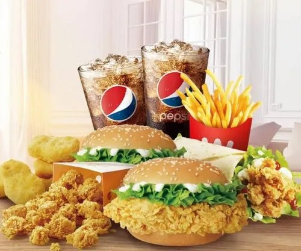
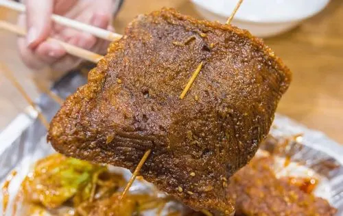
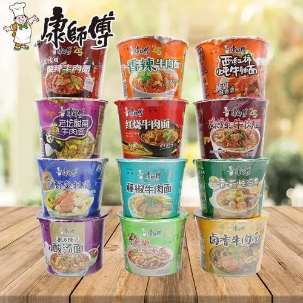
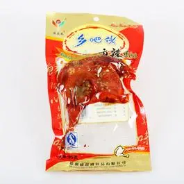

此套餐之美味并不突出，突出的是他食后效果，让人欲罢不能，酣畅淋漓...(由徐XX亲身体验)
2.油炸中的极品
此物乃豆干油炸所成，名为八宝，经油炸之后再加上独特秘制酱料，香气扑鼻，入口即让人欲仙欲死(由刘XX亲口述说)
3.深夜宿舍封楼顶饿神物
此物名为泡面，有但不局限于图中所示口味，优点在于方便快捷，易于储存，即泡即吃，缺点在于香气过于浓厚，会引发舍友唾骂与食欲，不到万不得已，切不可随意使用！(由本人倾情推荐)
4.深夜懒人必备大鸡腿
这种袋装鸡腿肉感与香味并存，一口下去鸡肉的口感与各种香料在口腔内迸发，能够充分满足深夜嘴馋肚饿的需求。优点在于方便易得，宿舍楼内的自动贩卖机就有，并且还不需要热水冲泡，开袋即食，懒人狂喜。缺点在于价格偏贵，吃鸡腿根部时需要用手接触鸡腿，容易沾上油污。
5.肥宅快乐水此物不必多做解释，诸位肥宅都对其再熟悉不过，配上鸡腿食用效果更佳。优点在于好喝！ 缺点在于容易引起百事党和可口党的争执。